Welcome to Girl Develop It
We create welcoming, supportive and accessible environments for women and non-binary adults to learn software development.
We are dedicated to providing a welcoming and comfortable environment for all to learn coding and every attendee is expected to uphold our Code of Conduct :
What Does Girl Develop It Teach?
Web Development
Data Science
UX Design & Research
Workforce Classes
Career-Building Events & Conferences
Find All Our Classes & Events:
Housekeeping
Display your preferred name and pronoun.
We are here for you!
Every question is important.
Participate, Experiment, Have Fun!
(Optional Slide for TAs; comment out if not using)
TA Intro(s)
Names, titles
Welcome!
What brings you here today?
What’s your favorite website?
Topics
History: How did the web come to be this way?
Web pages: What does a web browser do?
Mechanics: How does the web work?
Careers: Who makes websites?
History
It’s the 1960s. How can you share data with your colleagues?
Picture this: It's the 1960s. You're studying at a university, and your colleagues are at other universities.
You're using the school's computer to generate a thousand lines of data, and you think you found something really cool.
How can you share it with your colleagues?
History
It’s the 1960s. How can you share data with your colleagues?
You can ask them to come visit you.
You can print off the data and mail it to them.
You can save the data to a tape that another computer can read, and mail that.
History
Inconvenient!
Normally you can't do much about inconveniences, but in the 60s, the US was in the middle of the Cold War. It had a lot of money set aside for academics' productivity.
So in 1965, after some lobbying by researchers, the US government was convinced to divert funds from missile development to building a network between university computers.
History
1969: ARPANET online, and growing...
Source: DARPA
Only 4 universities were connected at first, but this would increase to 111? plus government institutions, and eventually connected overseas.
History
1972: and growing...
Source: DARPA
History
1973: and growing...
Source: DARPA
History
1983: and growing, connecting to international networks...
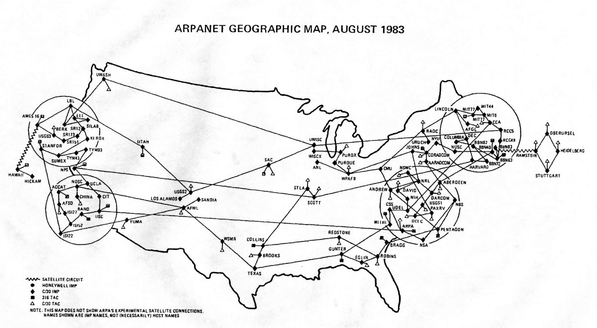Source: DARPA
Eventually ARPANET was decommissioned, leaving networks that connected into the Internet we know today.
History
1989: HTML proposed
Tim Berners-Lee at CERN:
What if information was easier to navigate?
Read the proposal, now in HTML: https://www.w3.org/History/1989/proposal.html
At first, this was just for things like email and downloading files; you couldn't surf the web.
But in 1989, an English computer scientist named Tim Berners-Lee working at a Swiss organization called CERN wrote a proposal for a language called HTML. Basically everything you've ever seen in your web browser is an HTML fil, but they started off simpler. Tim Berners-Lee invented the web browser to render HTML.
History
1989: HTML proposed
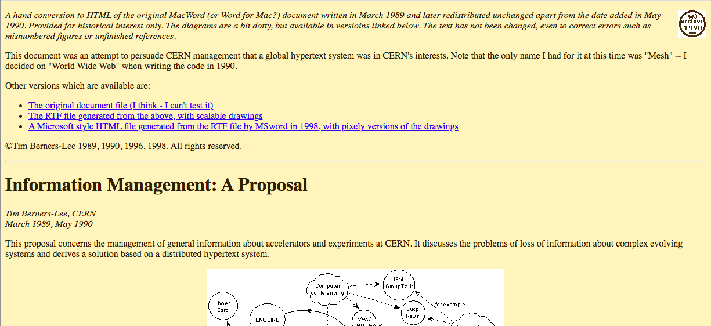Screenshot from July 2021
Files written in HTML would look like an academic journal article, with text and lists and tables, but the new thing about HTML is that you could click "hyperlinks" to be brought to other HTML files. This made it easier to reference otehr academics' work and to add footnotes.
HTML was never meant to be used for interactivity, the way we expect our websites to behave now. But it was a part of the start of the world wide web, a collection of websites that anyone in the world with access to the Internet could access just by entering a URL. This proposal went over well!
History
1995: JavaScript created
Learn more: http://speakingjs.com/es5/ch04.html
By 1995, multiple web browsers existed, and they were fighting each other for market share. One of these was called Netscape. Netscape asked a software engineer named Brendan Eich to create something that none of the other web browsers had: A second language, which would allow a website to contain interactivity - calculators, ticking clocks, playing games. They wanted a language that would be easy for experienced programmers to learn, hard for inexperienced programmers to mess up, and powerful, and they all wanted it in 2 weeks!
Somehow he pulled it off and created a language called JavaScript, but because of these constraints, it has a lot of quirks we still live with today. Nonetheless, it caught on big time.
History
Add interactivity to web pages.
Make it easy for experienced programmers to learn.
Make it hard for inexperienced programmers to mess up.
Invent it in 2 weeks.
Learn more: http://speakingjs.com/es5/ch04.html
By 1995, multiple web browsers existed, and they were fighting each other for market share. One of these was called Netscape. Netscape asked a software engineer named Brendan Eich to create something that none of the other web browsers had: A second language, which would allow a website to contain interactivity - calculators, ticking clocks, playing games. They wanted a language that would be easy for experienced programmers to learn, hard for inexperienced programmers to mess up, and powerful, and they all wanted it in 2 weeks!
Somehow he pulled it off and created a language called JavaScript, but because of these constraints, it has a lot of quirks we still live with today. Nonetheless, it caught on big time.
History
1996: CSS created
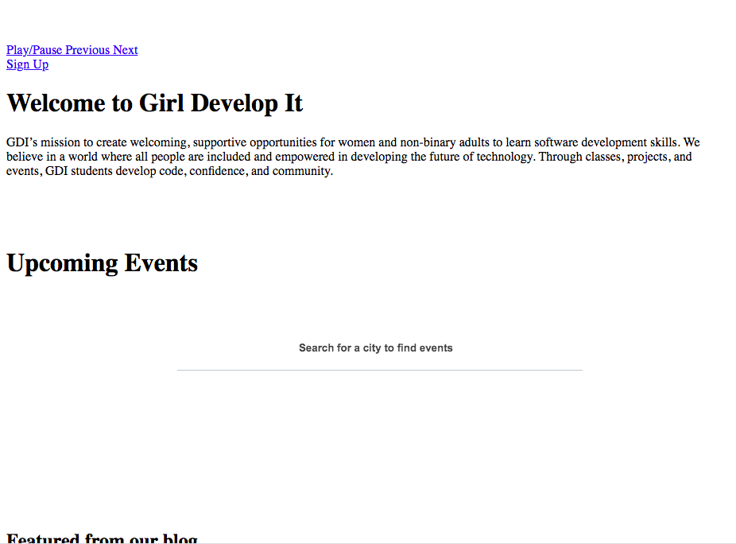
Read the proposal: http://www.w3.org/People/howcome/p/cascade.html
In 1996, as the web became more mainstream and less confined to academic spaces, a language called CSS was implemented to help make web pages more friendly to professional publication, like business and news websites.
History
2012: Media queries implemented
In 2012, as more and more people started accessing the web via small-screened devices like smart phones, we got a new feature in CSS called "media queries", which let you change how a web page looks on different screen sizes. This was part of a movement called "responsive design", which is about making the web easier to use on small screens as well as large screens, because small screens are how much of the world navigates the web today.
Web pages
You don’t have to be on the web to use a web browser.
Web browsers read HTML, JavaScript and CSS to render web pages.
Web pages
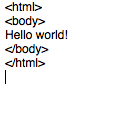
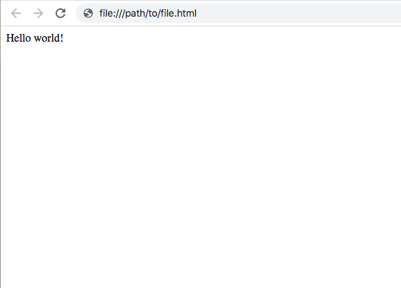
HTML is a very simple language. It doesn't do much, just helps you lay out a page. So it's easy to get started. You can literally write these 5 lines in a text file and open it in your browser, and you've written HTML. This isn't much different from how web pages looked abck in the early 90s.
Web pages
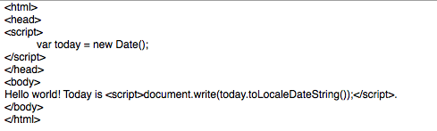
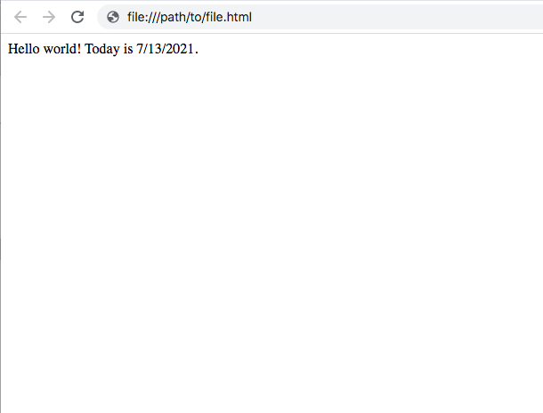
If you want to add interactivity, you can use JavaScript. This simple example shows today's date, but you can get much more complicated - any time you click or tap on a button in a web page and something changes, that's JavaScript code making it happen. Again, you can type these few lines into a text file and open it in your web browser, and you'll see exactly what you're seeing now - except with whatever the current date is.
But do you notice how the text here is really small, and it's in the kind of font you would see in an essay you wrote in school?
Web pages
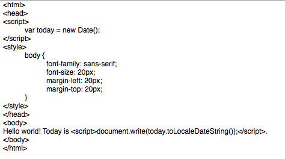
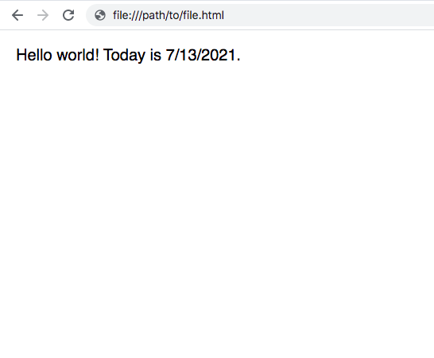
If you want your text bigger and easier to read, and you want to use more modern fonts, you can use CSS. CSS was simple at fist, just changing the font color and size and rearranging layouts. But you can do some very sophisticated things with CSS now.
Web pages
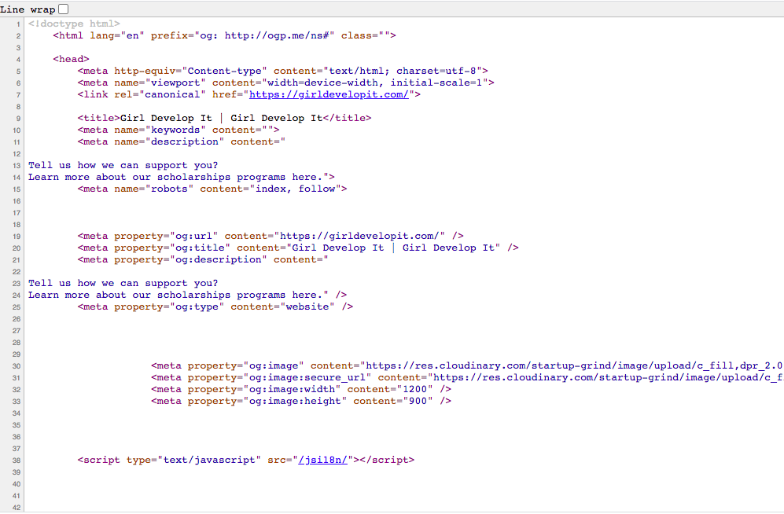
In desktop web browsers, you can see the HTML file any time by right-clicking and selecting "view source" or "view page source".
Web pages
This text file is what your web browser receives from another computer, called a server.
A server is any computer that connected to a network and is listening for requests it will respond to. (Hammer this in upcoming slides.)
Web pages
So how does the file get from the server to your computer?
Mechanics: An analogy
Suppose you want to send a letter to your friend to ask for news.
What steps do you have to take?
Mechanics: An analogy
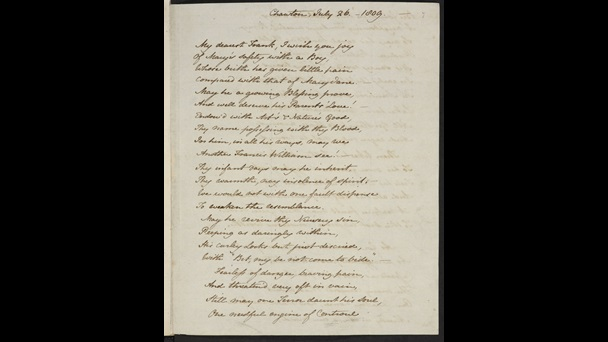
Source: British Library
Write a letter - don’t forget to date it!
Write your letter. Be sure to date it so that friend knows how long it's been since you wrote it. Also if you write two letters and they arrive out of order, your friend will know what order to read them in and won't get confused.
Mechanics: An analogy
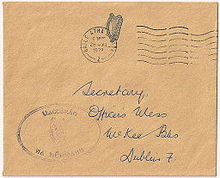
Source: Wikimedia Commons
Place it in an envelope and add an address.
Mechanics: An analogy
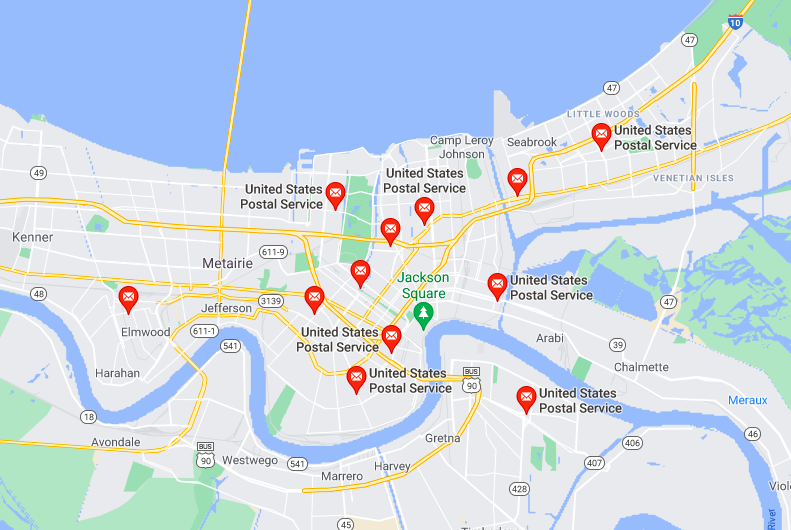
Screenshot from July 2021
Give it to the post office, which routes it through many post offices to get to its destination.
Hand it off to the post office, which will route it through potentially multiple post offices to get it to your friend.
This is a map of post offices in New Orleans, for example. (Gesture to show some possible routes the letter could take.)
You don't need it to go straight to them; it could take a circuitous route and it will still get there because each post office can make a good decision about how to forward it in the right direction.
You also don't have to tell them how to get the letter to your friend's house. The post office network handles that for you.
Your friend will receive it and send their news back to you. It might go through a completely different route.
Mechanics: An example
Suppose you want to look up information about how the web works.
Mechanics: An example
You start your favorite web browser.
Mechanics: An example
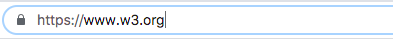
You type https://www.w3.org into your URL bar.
URL stands for “Uniform Resource Locator”, and it’s a nice shorthand for the server’s address.
Maybe you want to go straight to w3's website and get information directly from the source.
Web pages
Your computer sends a request out to the Internet, trying to reach w3’s server.
Web pages
This is a simple request, containing:
The domain : The URL of the server to send the request toThe action : What it wants the server to do
GET / HTTP/1.1
Host: www.w3.org“I want to GET all the information for the homepage of www.w3.org”
Mechanics: An example
The Internet contains routers which act like little post offfices.
Web pages
The response will contain:
A status code : Indicator of any problems that may have occurredThe content : The HTML and embedded CSS and JavaScript that the web browswer should render
HTTP/1.1 200 OK
Content-Type: text/html
<!DOCTYPE html>
...
</html>
Mechanics: An example
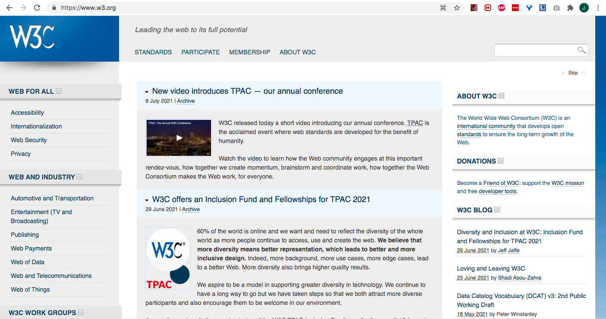
Your browser can now render the document.
Mechanics
One difference between the web and the postal system:
You don't have to know the address of the server, just its domain name.
Careers
If you want to work on websites, there are a lot of different options.
Here are a few you might see a lot.
Careers
Design
Aesthetics and layout
User experience
Design a specific website, or design templates that can be reused
On a team, designers are some of the most important people. The difference between a good designer and a bad designer is the difference between your product being understandable and usable, vs. incoherent, confusing, and sketchy.
Aesthetics: How should it look, on large screens and small screens? What graphics should be used?
UX: How should forms behave as the user interacts with them? What should the flow be when uploading a file? What should happen when an error occurs?
These are closely intertwined. Some designers do both, while others specialize, and there are lots of other ways to specialize too.
Careers
Front-end web development
HTML, CSS, and JavaScript
Implement designers’ designs
Get data from servers and show it to users in a useful way
A front-end developer writes the HTML, JavaScript, and CSS that your web browser will run to show you the web page.
On a team, if you're lucky, this means implementing the designers' designs.
Entails:
filling in gaps where the designs are underspecified,
making sure everything runs smoothly and without errors,
ensuring the code is both fast and legible to other programmers,
and using code to communicate with servers you don't have control over
Careers
Back-end web development
Write code in any language that runs on the host server
Write fast and secure code to process requests from anyone, including hackers
A back-end developer writes the code that runs on the server.
You can use any language that the server can run. PHP was popular for a long time. Many startups today use popular languages like python, JavaScript, and ruby. Bigger organizations might choose to use languages like Java or C#.
Entails:
securely handling requests from anyone on the internet, including hackers
writing responses in a way that the front-end developers can actually use
sometimes architecture and language decisions
Full-stack developers do both front-end and back-end development.
Some people like to do full-stack plus design, which is hard, but makes you a very appealing freelancer to small startups short on money and HR.
Careers
Quality assurance
Notice every out-of-place detail and quirk
Test manually
Write code to test anything you can automate
Many startups can't afford a QA person, but they make a huge difference when they come on board! Just about any web development company that can afford one has a QA team, and a lot of people do QA as a first role in tech.
Manually click through websites to ensure everythign matches the designs and feels smooth and leigble. A good manual QA tester will find things a developer never thought to look at.
Software engineering to build automated testers. These programs can be as simple as a smoke test, or simulate clicking through the website, making sure that necessary flows like logging in and logging out are still functioning.
Careers
Some Others
Product management
Project management
DevOps
Database administration
Product management: Identify priorities in the product (website in this context) and collaborate with the team to implement them.
Project management: Different from product management; keep everyone on all the different teams in a project on-task and on track to finish in time.
Dev ops: Development-operations. Make engineers' jobs harder to mess up, make it easier and faster to complete software development, put changes in place to reduce the chances the website goes down.
Database administration: Improve and maintain the slowest and most vulnerable part of a website.
New GDI Courses
Course Name
Course Name
Course Name
Thank You!